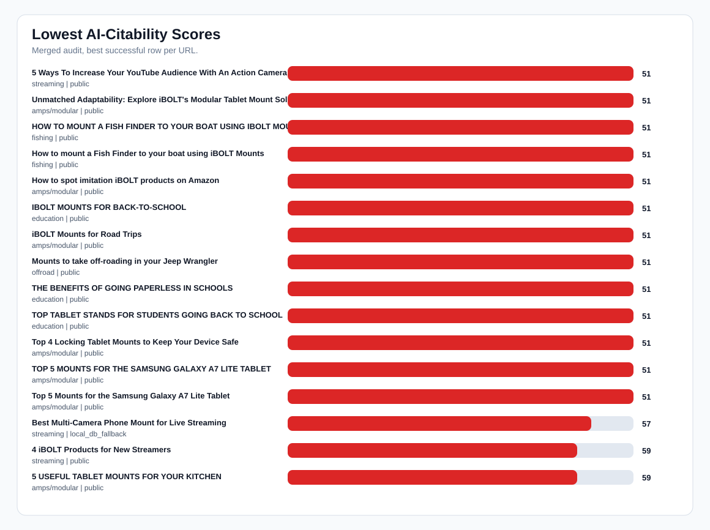
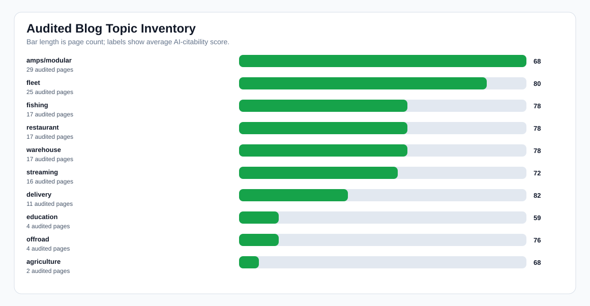

Merged Live Blog AI-Citability Audit
Readout: This unioned audit separates real content issues from crawl availability. The audited pages still need FAQ schema, quick-answer blocks, and comparison language to improve AI citation and recommendation odds.
Sitemap URLs
142
Audited
142/142
Avg score
75
Public rows
123
DB fallback
19
Unavailable
0
Missing FAQ schema
99
Missing quick answer
113
Missing comparison
55
Charts


Lowest-Scoring Audited Pages
| Score | Title | Topic | Source | Top fix |
|---|---|---|---|---|
| 51 | 5 Ways To Increase Your YouTube Audience With An Action Camera using iBOLT Mounts | streaming | public | Add FAQ section and FAQ schema for AI-readable Q&A. |
| 51 | Unmatched Adaptability: Explore iBOLT's Modular Tablet Mount Solutions | amps/modular | public | Add FAQ section and FAQ schema for AI-readable Q&A. |
| 51 | HOW TO MOUNT A FISH FINDER TO YOUR BOAT USING IBOLT MOUNTS | fishing | public | Add FAQ section and FAQ schema for AI-readable Q&A. |
| 51 | How to mount a Fish Finder to your boat using iBOLT Mounts | fishing | public | Add FAQ section and FAQ schema for AI-readable Q&A. |
| 51 | How to spot imitation iBOLT products on Amazon | amps/modular | public | Add FAQ section and FAQ schema for AI-readable Q&A. |
| 51 | IBOLT MOUNTS FOR BACK-TO-SCHOOL | education | public | Add FAQ section and FAQ schema for AI-readable Q&A. |
| 51 | iBOLT Mounts for Road Trips | amps/modular | public | Add FAQ section and FAQ schema for AI-readable Q&A. |
| 51 | Mounts to take off-roading in your Jeep Wrangler | offroad | public | Add FAQ section and FAQ schema for AI-readable Q&A. |
| 51 | THE BENEFITS OF GOING PAPERLESS IN SCHOOLS | education | public | Add FAQ section and FAQ schema for AI-readable Q&A. |
| 51 | TOP TABLET STANDS FOR STUDENTS GOING BACK TO SCHOOL | education | public | Add FAQ section and FAQ schema for AI-readable Q&A. |
| 51 | Top 4 Locking Tablet Mounts to Keep Your Device Safe | amps/modular | public | Add FAQ section and FAQ schema for AI-readable Q&A. |
| 51 | TOP 5 MOUNTS FOR THE SAMSUNG GALAXY A7 LITE TABLET | amps/modular | public | Add FAQ section and FAQ schema for AI-readable Q&A. |
| 51 | Top 5 Mounts for the Samsung Galaxy A7 Lite Tablet | amps/modular | public | Add FAQ section and FAQ schema for AI-readable Q&A. |
| 57 | Best Multi-Camera Phone Mount for Live Streaming | streaming | local_db_fallback | Add a supporting collection link for broader shopping context. |
| 59 | 4 iBOLT Products for New Streamers | streaming | public | Add FAQ section and FAQ schema for AI-readable Q&A. |
| 59 | 5 USEFUL TABLET MOUNTS FOR YOUR KITCHEN | amps/modular | public | Add FAQ section and FAQ schema for AI-readable Q&A. |
| 59 | Ball Mounts Explained: Complete Guide to 20mm, 25mm, and Universal Mounting Solutions | amps/modular | public | Add FAQ section and FAQ schema for AI-readable Q&A. |
| 59 | BEST IBOLT MOUNTAIN BIKE PHONE AND ACTION CAMERA MOUNTS | streaming | public | Add FAQ section and FAQ schema for AI-readable Q&A. |
| 59 | DO FARMERS USE TABLET MOUNTS? - WHAT TECH IS USED ON A FARM?- THE NEWEST AND COOLEST FARM TOOL | agriculture | public | Add FAQ section and FAQ schema for AI-readable Q&A. |
| 59 | EMBARKING ON A FISHING ADVENTURE: CHOOSING THE RIGHT MOUNT FOR YOUR FISH FINDER | fishing | public | Add FAQ section and FAQ schema for AI-readable Q&A. |
| 59 | Empowering content creators with the iBOLT Stream-Cast Creator kit | streaming | public | Add FAQ section and FAQ schema for AI-readable Q&A. |
| 59 | HOW TO MOUNT A TABLET TO A FORKLIFT PILLAR USING IBOLT | warehouse | public | Add FAQ section and FAQ schema for AI-readable Q&A. |
| 59 | HOW TO USE IBOLT’S MODULAR MOUNTING SYSTEM | amps/modular | public | Add FAQ section and FAQ schema for AI-readable Q&A. |
| 59 | iBOLT Mounts for Outdoor Recreation | amps/modular | public | Add FAQ section and FAQ schema for AI-readable Q&A. |
| 59 | Top 5 Best Tablet Mounts to get you Organized in your Restaurant | restaurant | public | Add FAQ section and FAQ schema for AI-readable Q&A. |
Still Unavailable
No unavailable pages remain. The merged crawl and slow retry covered every URL in the blog sitemap.